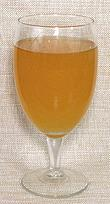

|
KvassSlavic, Baltic, etc. - Kvass (Slavic); Gira (Lithuania); Dzira (Latvia); Kali (Estonia); Kalja (Finland) | ||||
| Makes: Effort: Sched: DoAhead: |
10 cups ** 7 days Yes |
This is a very traditional beverage in most Slavic countries, particularly Poland, Russia, Belarus, Ukraine and Serbia. It is also popular in the Baltic countries, in the Caucasus, and in Western Asia. It is called "non-alcoholic", but will have 0.5% to 1% alcohol. This recipe makes the real thing - commercial products in North America are faked up - more like soda pop, and too sweet. In this recipe yeast eats just about all the sugar, so it has a touch of sour. | |||
|
1-1/2 6 1/4 1/4 1-1/2 3 |
# qt oz c c T |
Rye Bread (1) Water Yeast (2) Water, warm Sugar Raisins |
Make - (6 or 7 days - 1 hr work)
|